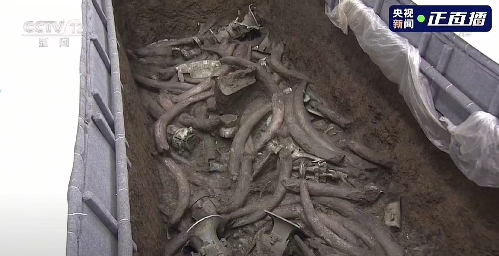
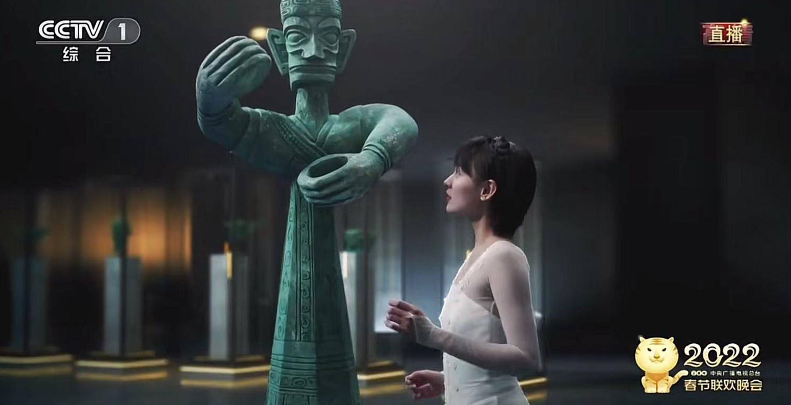
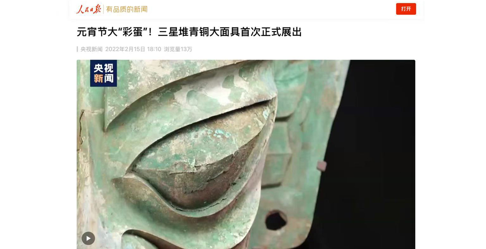
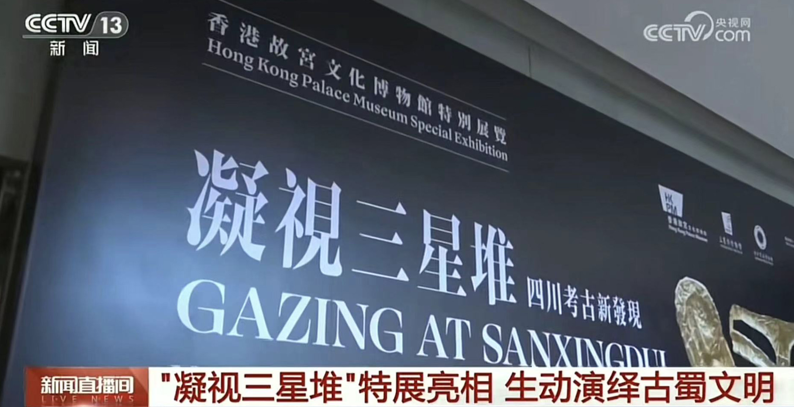
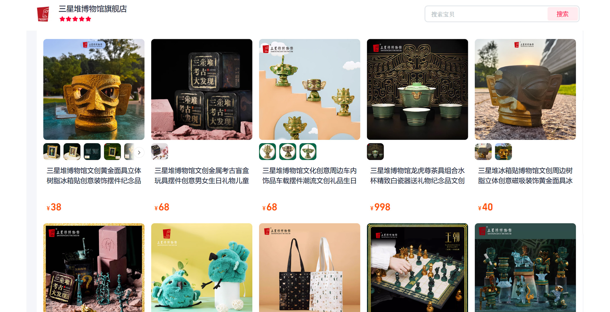

还原"案发现场"
2021年3月
惊世出土
三星堆遗址新一轮考古发掘成果公布，青铜面具作为代表性文物首次亮相，引发媒体广泛报道。
3月27日当天超9000人入馆参观，是平常周末的4倍以上，门票收入达51万元创馆史第二高。
2021年6月
央视直播
央视新闻推出《三星堆新发现》直播特别节目，连续数天直播考古发掘过程，观看量超千万。
青铜大面具从三号"祭祀坑"提取，其上被象牙所压，文保人员开始提取面具进行分析研究。

2022年1月
春晚亮相
三星堆青铜大面具登上央视春节联欢晚会，舞蹈《金面》演绎浪漫神话，话题阅读量超3亿。
微博话题#三星堆青铜大面具惊艳亮相春晚#引发热议，一眼三千年的震撼感染全国观众。

2022年2月
首次展出
青铜大面具在三星堆博物馆文物保护与修复馆首次正式展出，吸引大量游客参观。
2022年春节黄金周，三星堆博物馆接待游客83707人次，文创销售收入同比增长339.01%。

2023年9月
香港特展
青铜大面具在香港故宫文化博物馆"凝视三星堆——四川考古新发现"特展中展出，系三星堆新出土文物首次在四川外展出。
展览吸引众多香港市民和游客，进一步扩大了三星堆文化的国际影响力。

2024年
文创销售新高
三星堆文创产品突破1600种，单日销售额达到60万元左右，创下新的销售纪录。
暑期文创销售迎来高峰期，青铜小人麻将礼盒、神树摆件等产品深受游客喜爱。

2025年
研究突破
在"2025三星堆论坛"上公布多项重大研究成果，包括：证实三星堆存在大量彩绘青铜器，
将中国彩绘青铜器的历史提前近千年；精确测定多个祭祀坑埋藏于商代晚期等